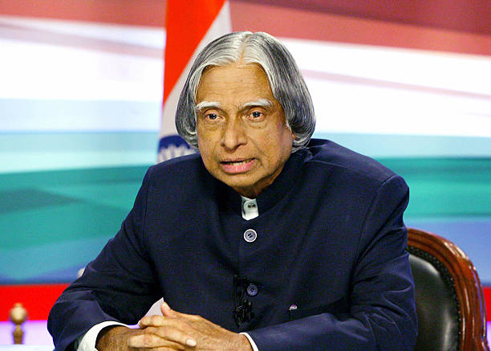
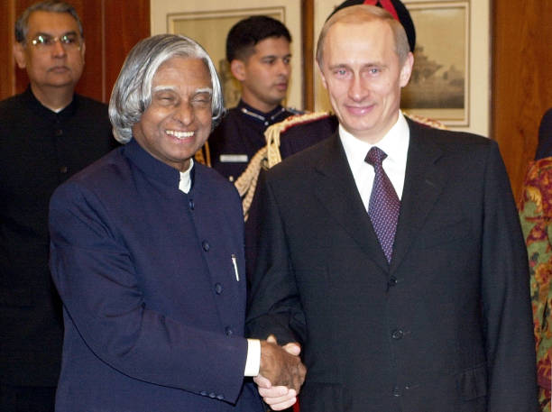
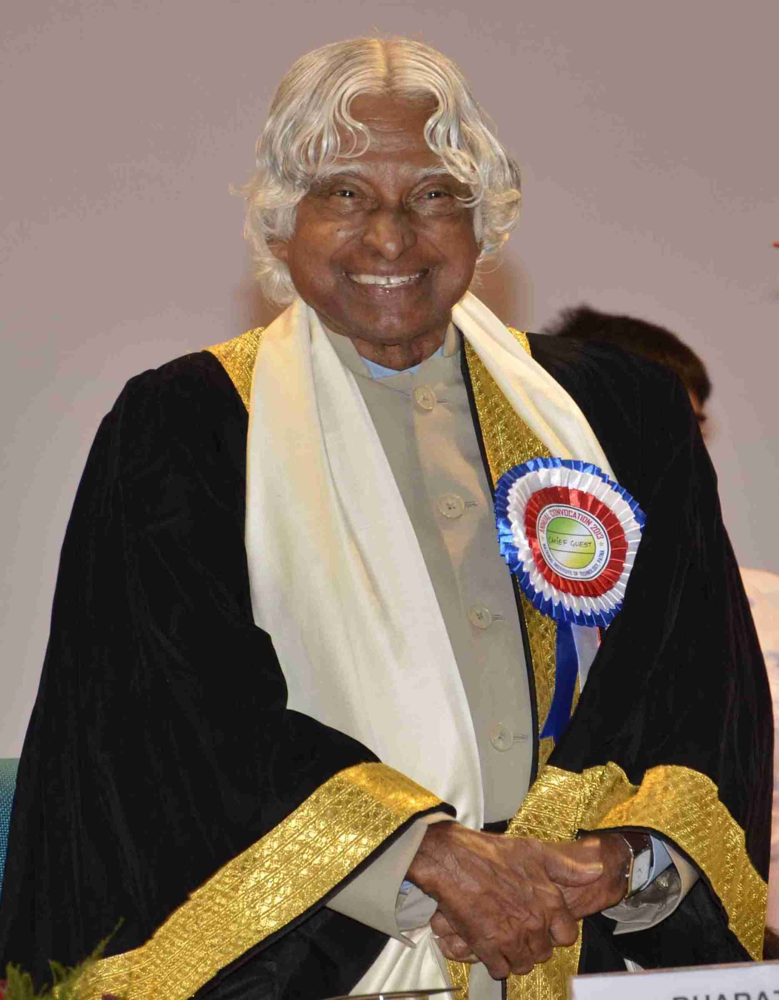

A. P. J. Abdul Kalam

The Missile Man of India
" A.P.J. Abdul Kalam, the 11th President of India and a pioneer of the country's space and missile programmes "
Here is a timeline of A.P.J. Abdul Kalam(1931-2015)
- 1931 - Born on October 15, 1931, at Rameshwaram.
- 1955 - Kalam moved to Madras to study aerospace engineering in Madras Institute of Technology.
- 1958 - Specialized in aero-engineering from the Madras Institute of Technology
- 1960 - He joined the Defence Research and Development Organisation. Five years later he joined the Indian Space Research Organisation.
- 1980 - Rohini Satellite Launched. Dr. Kalam made significant contribution as Project Director to develop India's first indigenous Satellite Launch Vehicle (SLV-III) which successfully injected the Rohini satellite in the near earth orbit in July 1980 and made India an exclusive member of Space Club.
- 1981 - Padma Bhushan for Dr. Kalam
- 1982 - He joined the Defence Research and Development Laboratory in Hyderabad as director after his stint with the Vikram Sarabbai Space Centre
- 1987 - Om Prakash Bhasin awards for science and technology for 1986
- 1989 - Indian scientists of the DRDO successfully test fired the Agni missile into the waters of the Indian Ocean. He was responsible for the development and operationalisation of AGNI
- 1990 - Padma Vibhushan for Dr. Kalam
- 1990 - Lok Sabha congratulated the Indian scientists team headed by Dr A. P. J. Abdul Kalam for the successful launch of the "Akash" multi-target surface-to-air missile
- 1993 - The medium range surface-to-surface missile 'Prithvi' was launched from the interim test range (ITR) at Chandipur-on-Sea. Dr. Kalam was the Prithvi Project Director.
- 1998 - Kalam Conferred Bharat Ratna Award.
- 1998 - Sonia Gandhi conferred the Indira Gandhi Award for National Integration on eminent scientist A P J Abdul Kalam for his contribution to the development of strategic technology in the country
- 1999 - Pokhran II Nuclear tests. DR. Kalam led Pokhran-II nuclear tests in collaboration with Department of Atomic Energy, which made India a nuclear weapon State.
- 2000 - THE VISVA BHARATI conferred its highest award Deshikottam on 10 luminaries, including ace nuclear scientist AP J Abdul Kalam
- 2000 - Dr A P J Abdul Kalam conferred doctor of science degree by the Madurai Kamaraj University
- 2002 - A.P.J. ABDUL Kalam sworn in as the country's 12th President
- 2015 - Dies at the age of 83.

List of honors and awards received by A. P. J. Abdul Kalam
- Distinguished Fellow - Institute of Directors, India, 1994[2]
- Honorary Fellow - National Academy of Medical Sciences, 1995[3]
- Honorary Doctorate of Science - University of Wolverhampton, UK, 2007
- King Charles II Medal - UK, 2007
- Honorary Doctor of Engineering - Nanyang Technological University, Singapore, 2008
- International von Kármán Wings Award - California Institute of Technology, USA, 2009
- Hoover Medal - American Society of Mechanical Engineers, USA, 2009
- Doctor of Engineering - University of Waterloo, Canada, 2010
- IEEE Honorary Membership - Institute of Electrical and Electronics Engineers, USA, 2011[4]
- Honorary Doctor of Laws - Simon Fraser University, Canada, 2012
- Honorary Doctor of Science - University of Edinburgh, Scotland, 2014[2]

Awards
- 1981: Padma Bhushan - Government of India
- 1990: Padma Vibhushan - Government of India
- 1997: Bharat Ratna - Government of India
- 1997: Indira Gandhi Award for National Integration - Government of India
- 1998: Veer Savarkar Award - Government of India
- 2000: SASTRA Ramanujan Prize - Shanmugha Arts, Science, Technology & Research Academy, India[4]
- 2013: Von Braun Award - National Space Society[3]
If you want to read more about A.P.J Abdul Kalam Click here.